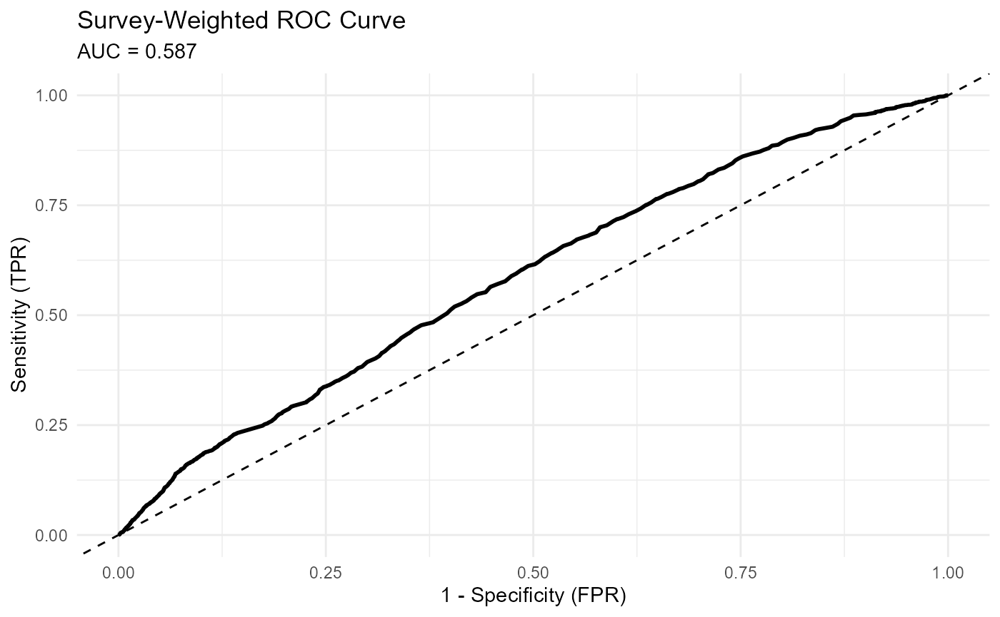

Diagnosing Survey Regression Models with svyTable1
Source:vignettes/v2-model-diagnostics.Rmd
v2-model-diagnostics.Rmd{r setup} knitr::opts_chunk$set( collapse = TRUE, comment = "#>" )
This vignette covers functions in the svyTable1 package
for diagnosing fitted survey regression models:
-
svydiag(): Checks reliability of regression coefficients.
-
svygof(): Performs Archer-Lemeshow goodness-of-fit testing for survey logistic models (Archer and Lemeshow 2006).
-
svyAUC(): Computes design-correct AUC for predictive performance.
These tools provide a structured way to assess whether model coefficients are precise, whether the logistic model fits observed data adequately, and whether predicted probabilities discriminate well between groups.
1. Data and Model Preparation
The examples use complete-case NHANES data from adults aged 20 years or older. A survey-weighted logistic regression model is fitted to predict obesity. This model is used throughout the vignette to illustrate each diagnostic function.
library(svyTable1)
library(survey)
library(dplyr)
library(NHANES)
library(knitr)
library(tidyr)
library(ggplot2)
data(NHANESraw)
nhanes_adults_with_na <- NHANESraw %>%
filter(Age >= 20) %>%
mutate(
ObeseStatus = factor(
ifelse(BMI >= 30, "Obese", "Not Obese"),
levels = c("Not Obese", "Obese")
)
)
vars_for_complete_table <- c(
"Age", "Gender", "Race1", "BPSysAve",
"Pulse", "BMI", "ObeseStatus"
)
nhanes_adults_complete <- nhanes_adults_with_na %>%
drop_na(all_of(vars_for_complete_table))
adult_design_complete <- svydesign(
id = ~SDMVPSU,
strata = ~SDMVSTRA,
weights = ~WTMEC2YR,
nest = TRUE,
data = nhanes_adults_complete
)
fit_obesity <- svyglm(
ObeseStatus ~ Age + Gender + Race1,
design = adult_design_complete,
family = quasibinomial()
)2. Regression Coefficient Diagnostics (svydiag())
svydiag() produces diagnostics for regression
coefficients, including p-values, precision measures, and relative
standard errors.
diagnostics_table <- svydiag(fit_obesity)
knitr::kable(
diagnostics_table,
caption = "Reliability Diagnostics for NHANES Obesity Model",
digits = 3
)| Term | Estimate | SE | p.value | is_significant | CI_Lower | CI_Upper | CI_Width | RSE_percent | is_rse_high |
|---|---|---|---|---|---|---|---|---|---|
| (Intercept) | -0.381 | 0.109 | 0.002 | TRUE | -0.604 | -0.158 | 0.445 | 28.486 | FALSE |
| Age | 0.008 | 0.002 | 0.000 | TRUE | 0.005 | 0.012 | 0.007 | 20.782 | FALSE |
| Gendermale | -0.061 | 0.057 | 0.294 | FALSE | -0.179 | 0.056 | 0.236 | 93.470 | TRUE |
| Race1Hispanic | -0.493 | 0.103 | 0.000 | TRUE | -0.704 | -0.282 | 0.422 | 20.870 | FALSE |
| Race1Mexican | -0.225 | 0.087 | 0.016 | TRUE | -0.403 | -0.046 | 0.357 | 38.733 | TRUE |
| Race1White | -0.654 | 0.081 | 0.000 | TRUE | -0.821 | -0.488 | 0.334 | 12.421 | FALSE |
| Race1Other | -1.351 | 0.131 | 0.000 | TRUE | -1.620 | -1.082 | 0.538 | 9.707 | FALSE |
3. Goodness-of-Fit Test (svygof())
svygof() implements the Archer and Lemeshow goodness of
fit procedure for complex survey logistic regression (Archer and Lemeshow
2006). This test adapts the Hosmer and Lemeshow approach to
designs with weights, strata, and clustering.
The function groups respondents by predicted risk and compares observed and expected outcomes while incorporating survey weights. A small p-value provides evidence that predicted risks diverge from observed risks in one or more groups.
This test helps identify lack of fit that may result from omitted interactions or nonlinearities in the model.
gof_results <- svygof(fit_obesity, adult_design_complete)
knitr::kable(
gof_results,
caption = "Archer-Lemeshow Goodness-of-Fit Test for Obesity Model"
)| F_statistic | df1 | df2 | p_value |
|---|---|---|---|
| 4.675254 | 9 | 24 | 0.0011839 |
A significant p-value indicates poor model fit across predicted risk groups.
4. Model Performance (svyAUC())
svyAUC() estimates the area under the ROC curve using
replicate-weight designs. This produces an AUC estimate and confidence
interval that appropriately reflect survey sampling.
The function also returns data for constructing ROC curves. A plot of the ROC curve, along with the AUC estimate, demonstrates how well the model discriminates between obese and non-obese respondents.
A value close to 0.5 indicates little discriminatory value, while higher values indicate stronger predictive performance.
rep_design <- as.svrepdesign(adult_design_complete)
fit_obesity_rep <- svyglm(
ObeseStatus ~ Age + Gender + Race1,
design = rep_design,
family = quasibinomial()
)
auc_results_list <- svyAUC(fit_obesity_rep, rep_design, plot = TRUE)
knitr::kable(
auc_results_list$summary,
caption = "Design-Correct AUC for Obesity Model"
)| AUC | SE | CI_Lower | CI_Upper |
|---|---|---|---|
| 0.5867566 | 0.0089921 | 0.569132 | 0.6043811 |
ggplot(auc_results_list$roc_data, aes(x = FPR, y = TPR)) +
geom_line(linewidth = 1) + # Changed 'size' to 'linewidth'
geom_abline(linetype = "dashed") +
labs(
title = "Survey-Weighted ROC Curve",
subtitle = paste0("AUC = ", round(auc_results_list$summary$AUC, 3)),
x = "1 - Specificity (FPR)",
y = "Sensitivity (TPR)"
) +
theme_minimal()